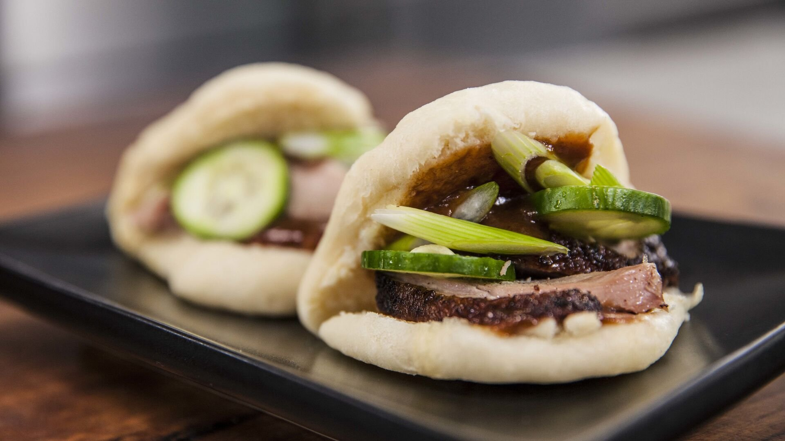

Authentic Peking Duck Bao

Introducing out delectable Peking duck bao! This fusion of Chinese and Taiwanese cuisine
brings together succulent flavors of crispy roast duck and the soft, pillowy texture of a steamed
bao bun. Crispy skin, juicy meat that melts in your mouth, and a soft fluffy bun, with just a touch
of sweetness from the hoisin sauce. What more could you want?
Ingredients
- 250 mg lukewarm milk
- 7g instant yease
- 310g self-raising flour
- 75g cornflour
- 1/2 tsp salt
- 1 tbsp vegetable oil
- 1/2 tbsp bicarbonate soda
- 1 Lebanese cucumbed
- Ready roasted half duck
- 1/2 bunch of spring onion
- 3/4 cup hoisin sauce
Method
- Mix the milk, yeast, and 5 tablespoons of flour in a bowl and let it rest for 30 minutes
- Add the rest of the flour, sugar, salt, and oil and mix to form a dough
- Let the dough rest for 2 hours, add the bicarbonate soda, and knead again
- Cut the dough into even pieces and form the shape of a bun
- Prepare the garnish while it is resting and cur the duck into small medallions
- Steam the buns in a large steamer basket for 20-25 minutes
- Add the fuck, cucumber, shallots, and hoisin sauce onto the bun and enjoy!